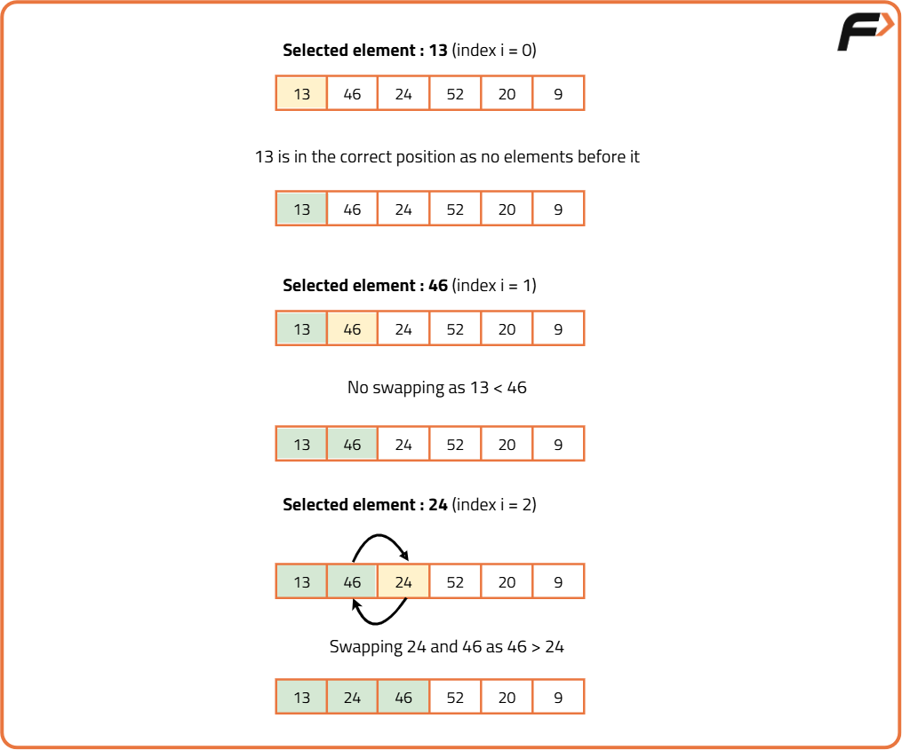
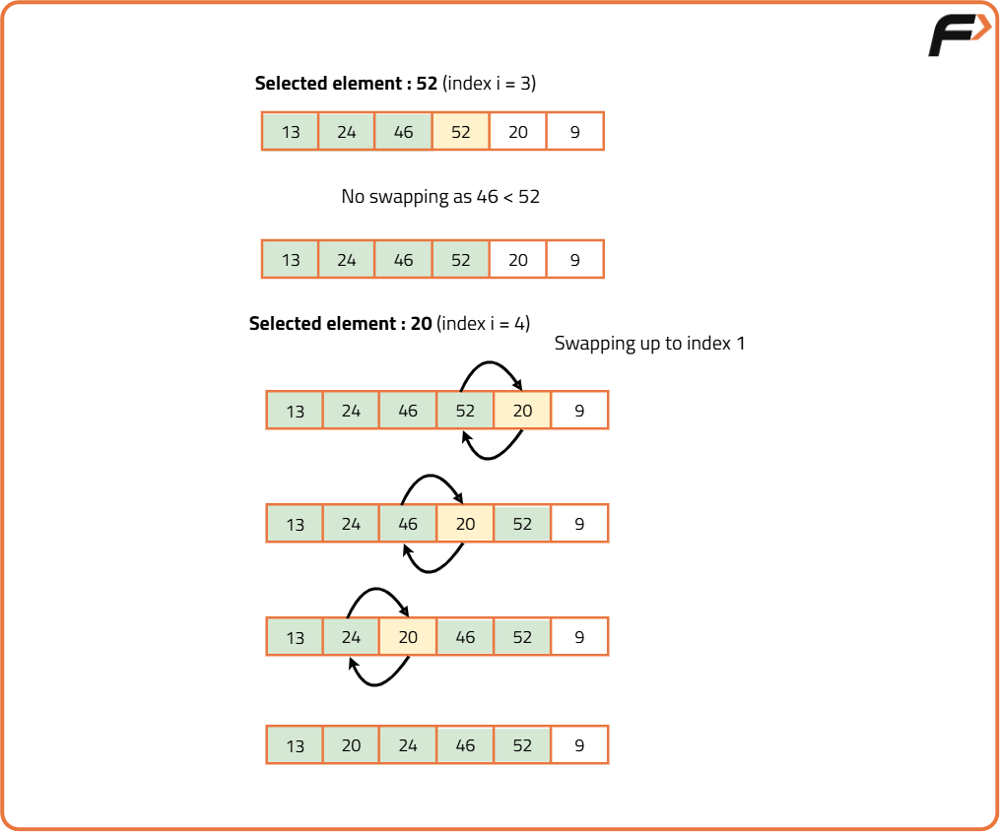
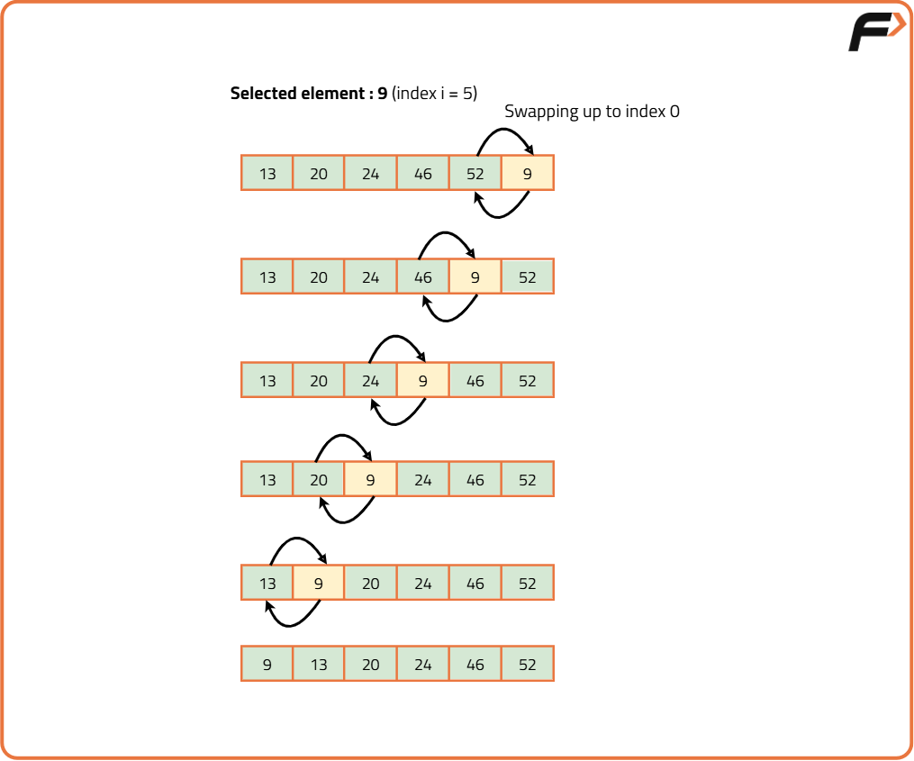

Recursive Insertion Sort Algorithm
Problem Statement: Given an array of N integers, write a program to implement the Recursive Insertion Sort algorithm.
Examples
Example 1:
Input: N = 6, array[] = {13,46,24,52,20,9}
Output: 9,13,20,24,46,52
Explanation: After sorting we get 9,13,20,24,46,52
Example 2:
Input: N = 5, array[] = {5,4,3,2,1}
Output: 1,2,3,4,5
Explanation: After sorting we get 1,2,3,4,5
Disclaimer: Here is the practice link to help you assess your knowledge better. It's highly recommend trying to solve it before looking at the solution.
Approach
Algorithm
In the iterative method, we did the following:
- Take an element from the unsorted array(using an outer loop).
- Place it in its corresponding position in the sorted part(using an inner loop).
- Shift the remaining elements accordingly.
- First, call the recursive function with the given array, the size of the array, and the index of the selected element(let's say i).
- Inside that recursive function, take the element at index i from the unsorted array.
- Then, place the element in its corresponding position in the sorted part(using swapping).
- After that, Shift the remaining elements accordingly.
- Finally, call the recursion increasing the index(i) by 1.
- The recursion will continue until the index reaches n(i.e. All the elements are covered). Base Case: if(i == n) return.
-
In recursive method we will do the following
Dry Run
The purple color represents the unsorted array. The yellow color represents the current element that needs to be placed in the appropriate position. The green color represents the sorted array.


Code
#include <bits/stdc++.h>
using namespace std;
// Recursive insertion sort function
void insertion_sort(int arr[], int i, int n) {
// Base Case: if index reaches the size, return
if (i == n) return;
int j = i;
// Shift the element to the left while it's smaller than its predecessor
while (j > 0 && arr[j - 1] > arr[j]) {
// Swap arr[j] and arr[j-1]
int temp = arr[j - 1];
arr[j - 1] = arr[j];
arr[j] = temp;
j--;
}
// Recur for the next index
insertion_sort(arr, i + 1, n);
}
int main() {
int arr[] = {13, 46, 24, 52, 20, 9};
int n = sizeof(arr) / sizeof(arr[0]);
cout << "Before Using Insertion Sort: " << endl;
for (int i = 0; i < n; i++) {
cout << arr[i] << " ";
}
cout << endl;
// Call recursive insertion sort
insertion_sort(arr, 0, n);
cout << "After Using Insertion Sort: " << endl;
for (int i = 0; i < n; i++) {
cout << arr[i] << " ";
}
cout << endl;
return 0;
}
Complexity Analysis
Time Complexity: O(N2), (where N = size of the array), for the worst, and average cases.
Space Complexity: O(N) auxiliary stack space.